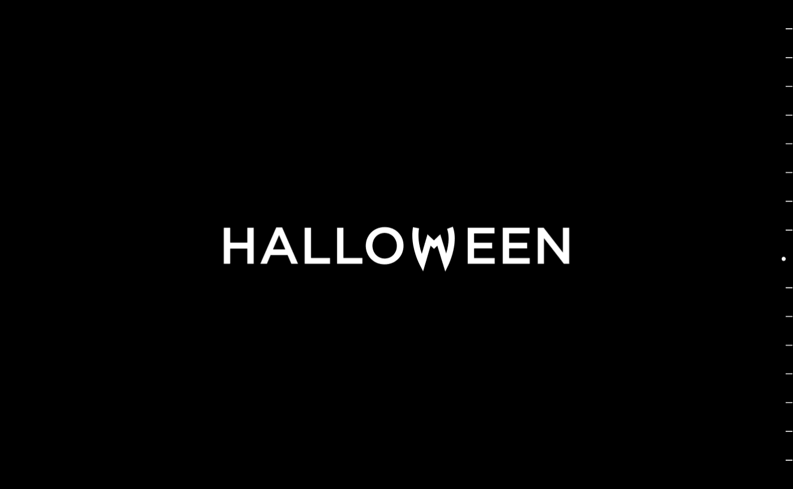

Lab 12: Advanced Block-level Styling II

Big Idea
The idea of this lab is to continue working with a partner and experiment more about styling block elements and centering images or text.
Challenge
There was no challenge, it was more like an exploring lab and learning more about centering objects and styling block elements.
Problems
I didn't had any problems, it was more time consuming to learn how it works but it was a fun lab in general.
Results
Here are the results, enjoy!
Floated
Happy Halloween!